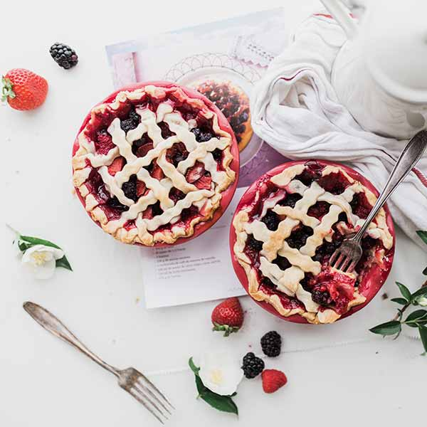
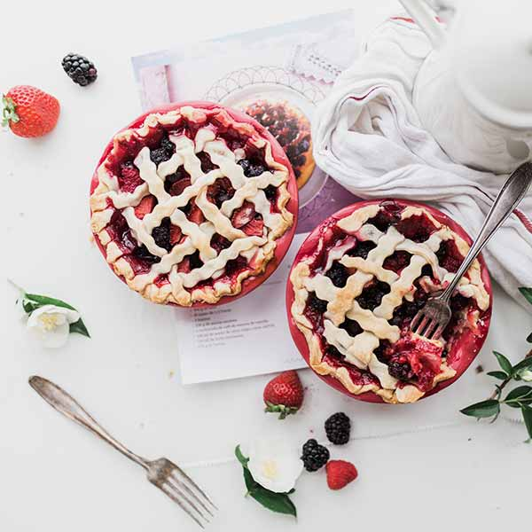
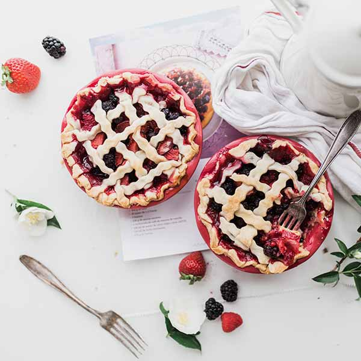
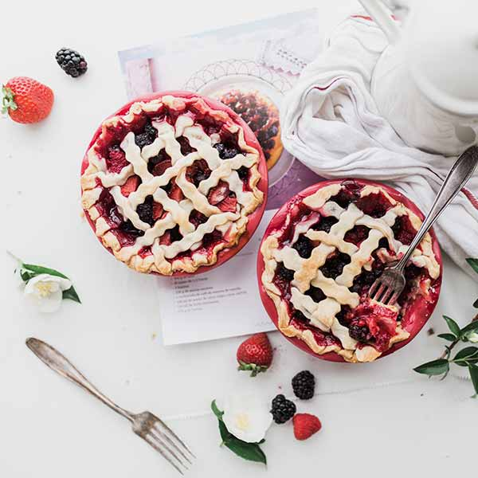

 

| Architektonický skvost láká své hosty atmosférou ve stylu Grand Café již od roku 1922 nejen unikátními keramickými dekoracemi. Kvalitní servis, prvotřídní kuchyně a dostupné ceny v luxusním prostředí - to je resaurace Saturejka. | Saturejka není jen restaurace, ale také kavárna, která navazuje na svou slávu z první republiky. Naše dorty jsou výjimečné svou chutí a jsou vyrobeny z prvotřídních surovin. Dort si můžete vychutnat v krásném prostředí našeho vnitrobloku nebo si jej odnést s sebou. |
| Jedinečný kulinářský zážitek z jídla v naší restauraci je umocněn prémiovým porcelánem značky Vilém & Švec. Klasická, elegantní a přitom dokonale nadčasová kolekce vás nadchne stejně jako nás. Těšíme se na vaši návštěvu! | Saturejka a její privátní salonky jsou dokonalým místem pro setkání, oslavy či firemní akce. |

Je libo lehčí večeře? Nač hledat, když ji pro vás máme už připravenou! Vyzkoušejte pečeného lososa na bylinkách s dušenou jarní zeleninou a bylinkovým máslem,. Veškeré ryby objednáváme čerstvé u prémiových a ověřených dodavatelů.

Pochutnejte si na našem tagliatelle s kuřecím masem s bazalkou a smetanovou omáčkou. Vynikající lehký oběd pro slunné jarní dny. Kuřecí maso pochuzí od lokálních dodavatelů z kuřat chovaných pod širým nebem. Těstoviny vyrábíme ručně přimo u nás.

Připomeňte si atmosféru sluncem zalité Provence díky jedinečené sladkokyselé chuťi našeho ctironového dortu s polevou z bílé čokolády. Vychutnejte si jej spolu s hrnkem dobré kávy na naší vnitroblokové zahrádce, která poskytuje útočiště před ruchem velkoměsta.